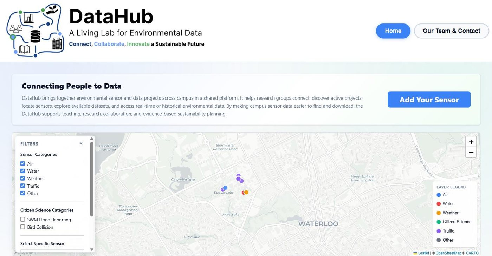

Project · IDEAS Clinic · Live
UW DataHub — Sensor Data Backend
A PhD researcher had environmental sensors scattered across campus and no single place to get the data out of them. Another co-op and I rebuilt the whole platform — I took the backend.

The problem
A PhD student's research depends on environmental sensors monitoring conditions across the University of Waterloo campus — air, water, weather, traffic. She wanted a hub: one place where research groups and students could find those sensors, see what's being measured, and pull the data for themselves instead of emailing someone for a spreadsheet.
The catch is that campus sensors have nothing in common. Some are modern instruments with clean REST APIs. Some sit behind a vendor's web portal with no documented API at all. And some, genuinely, only communicate by emailing you a file on a schedule. Any hub worth building has to make all of those look the same from the outside.
What I built
My half of the rebuild was the backend, and specifically the ingestion layer — making an API for sensors that don't have one. That meant a different approach per source:
- Existing APIs — where a real API existed, poll it, normalize the response, and fold it into the shared schema.
- URL manipulation — some portals generate data exports through predictable query strings, so the export endpoint is the API once you work out the parameters.
- Request-level scraping — rather than driving a browser, I traced the requests a portal's own front end makes and replayed them directly. Faster, far less brittle, and it survives a redesign of the page.
- Email-only sensors — automated parsing of the scheduled emails these sensors send, so their readings land in the same pipeline as everything else with no human in the loop.
The point of all of it is that a researcher downloading data from DataHub never has to know which of those four things is happening underneath.
An accidental detour
Reverse-engineering one vendor's portal went further than intended and left me looking at rather more of their database than the data I'd gone in for. (I swear I just wanted the readings I already had access to — not other people's usernames and passwords.) A useful reminder that "the data is public if you know the URL" is doing a lot of work in some of these systems.
Status
Live at datahub.uwaterloo.ca. Every sensor the researcher and her group have access to is now ingested and available through the hub — and there's still plenty to tighten up as more sources come online. See also: my current IDEAS Clinic term.